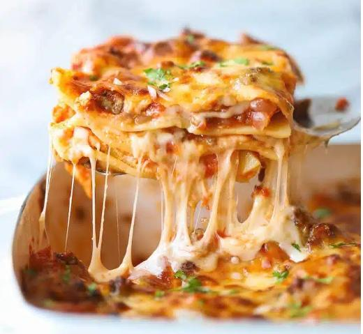

Lasagna is a comfort food for me. It brings back memories of holidays and being surrounded by family. In my house it always turns out a little differently each time depending on what ingredients I have on hand and what else is distracting me when I put it together. This, however, is more or less what I use and how I make it.
You should feel free to substitute or add other ingredients. Don't like zuchinni, use finely chopped broccoli instead. Or leave it out all together. Italian sausage or ground chicken/turkey could be used for the meat if you prefer. I use ground beef for the richness, but season it like italian sausage.
Heat oil in skillet and fry onion and mushrooms until soft and reduced. Set aside. Brown beef in skillet adding garlic, salt, red pepper flakes, fennel for one minute at the end. Add back onion and mushrooms and fry all for 2 minutes. set aside to cool. Finely slice the zuchinni (I use a mandolin on it's thinnest setting). oil a 9x13 baking dish. cover the bottom with sauce. put in firs layer of lasagna noodles. Next, layer the thin zuchinni. Add beef mixture and cover with the mozzarella. Add second layer of noodles and cover with sauce. layer the fresh spinach leaves. In a separate bowl mix the ricotta, egg, parmesean, and parsely. Scoop the ricotta mix onto the spinach. Final layer of noodles and a generous amount of sauce. cover with foil and bake at 350F in a pre-heated oven for 45-55 minutes, until sauce is bubbling on sides. Remove foil and add mozzarella and parmesean. Put back in oven for 5 more minutes. After removing from oven let the lasagna rest at room temperature for 10-15 minutes. Serve with a salad and your favorite beverage.
bon appetit!